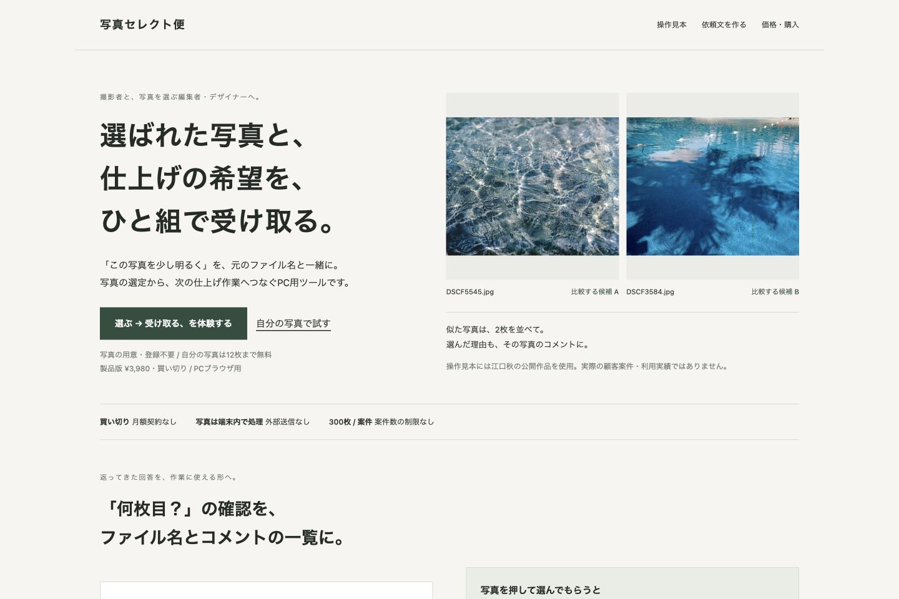
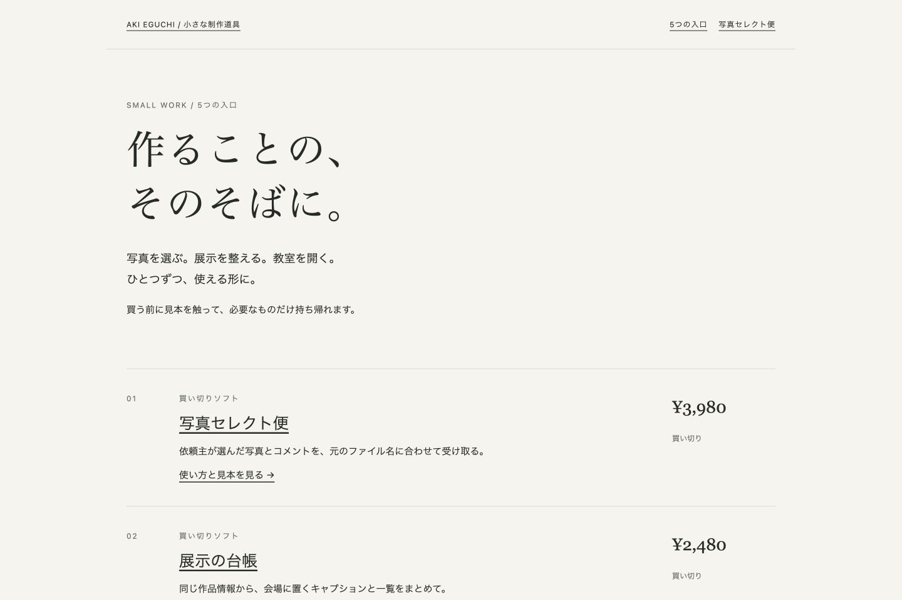
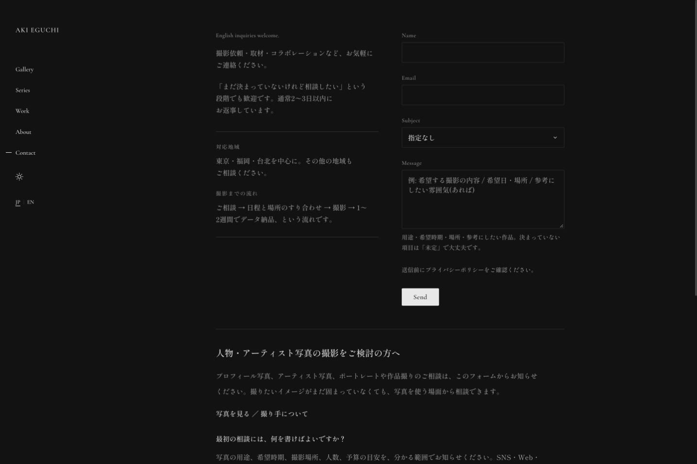

MONTHLY REVIEW / 制作元の初回見本
公開の状態と、
次の1つ。
画面確認日：2026/10/01（日本時間） · 対象：制作元の公開3ページ
顧客案件ではありません。初回のため前回との比較はまだできません。公開HTMLと、3ページすべてのPC 1440px・スマートフォン幅390pxの表示を確認した記録です。
今回の公開状態
| 対象 | HTTP | 取得したHTMLのタイトル・説明 |
|---|---|---|
| /tools/photo-select-bin.html | 200 | 写真セレクト便｜依頼主の写真選定・コメントを受け取るPCツール 依頼主に写真を選んでもらい、選択とコメントを元のファイル名で受け取るPC用ツール。2枚比較・透かし・CSV出力。写真のアップロード不要。300枚まで3,980円の買い切り、12枚まで無料。 |
| /tools/small-work/index.html | 200 | 小さな制作道具｜5つの入口｜小さな制作道具 展示・教室・写真・ウェブ。具体的な作業をひとつ軽くする、5つの道具とサービス。 |
| /contact | 200 | 撮影依頼・お問い合わせ | 江口秋 | Aki Eguchi | Photography 写真家・江口 秋への撮影依頼やお問い合わせはこちらから。取材やコラボレーションのご相談、作品に関するお問い合わせも受け付けています。 |
HTMLの取得時刻：2026-10-01T06:54:49.243209+00:00。公開されたページのHTMLと画面を読み取り、ログインや送信・決済は行っていません。HTMLと、読み込み後に画面へ表示された内容は分けて記録します。
前回との差分
今回は初回です。次回は今回の記録と比較し、公開状態・タイトル・説明・正規URL・主要リンクの変化を確認します。「HTMLに変化がない」と「画面や送信が正常」は同じ判断ではありません。
3ページの画面と所見
写真セレクト便
2つの体験の入口が表示されています。見本で流れを見る体験と、自分の写真を使う体験の目的を、選ぶ前に区別できる説明にするとよさそうです。


小さな制作道具
道具ごとに説明・見本への入口・価格が並んでいます。PCでは価格が右側、スマートフォン幅では説明の下に配置されています。


Contact
氏名・メールアドレス・相談内容の欄と送信ボタンが表示されています。スマートフォン幅では説明の下にフォームが続きます。実際の送信は行っていません。


次に直す1つ
写真セレクト便の2つの体験を、選ぶ前に区別できる説明へ。
事実：「選ぶ → 受け取る、を体験する」と「自分の写真で試す」が並んでいます。
提案：それぞれの入口に「見本の写真で、選んだ結果の受取りまで見る」「自分の写真12枚で、相手との往復を試す」と短い説明を添えます。
修正後に確認すること：初めて見る人が、自分の目的に合う入口を選べるか。文言が売上や離脱の原因であるとは、今回の点検だけでは判断できません。
未確認・対象外
- 問い合わせの実送信、決済、予約、顧客の行動・アクセス解析
- 24時間の稼働、実機操作、性能・セキュリティ・法令適合の監査
- 変更後の問い合わせ増加・検索順位・売上
この見本は画面上部と主要な入口を対象にしています。実際の契約では対象URLと点検範囲を合意し、確認した箇所と未確認を照合してから提出します。